Defining the Goal and Criteria of the Analysis
The goal of the MCDA can be stated as a problem or as question to be answered. For example: Show me the most and the least suitable locations in Brooklyn for adding new Citibike stations.
What makes a location suitable for something? Usually, it’s a combination of factors. Defining the criteria for what makes a place suitable is the core of MDCA. In this example, we will use the following criteria/layers:
Existing citibike stations: we will prioritize areas that are near the the existing network.
Density of the residential units constructed in the past 5 years: we will prioritize areas with higher density over areas of lower density.
Subway stations: we will prioritize areas closer to the subway stations.
Bike lanes: we will prioritize areas closer to the bike routes.
The data for this exercise can be downloaded from NYC Open Data and MapPLUTO. The packaged file of the above data can be downloaded below
Datasets
To create this map we will be using the following datasets:
Borough of Brooklyn - from New York City boroughs. Download from NYC Open Data – Department of City Planning. Choose "Export", under "Borough Boundaries & Community Districts".
Citibike stations. Data available from Citibike in JSON format. A point feature shapefile for the stations can be found in the package below.
MapPLUTO - Brooklyn MapPLUTO file (version 17v1), containing all the lots in Brooklyn and their attributes. The original PLUTO files can be downloaded from NYC Planning - Open Data. Make sure you download the file for the borough of Brooklyn. For more information about the PLUTO files and what each of the fields means take a look at the useful PLUTO data dictionary.
MTA Subway Station Locations. Download from NYC Open Data - Metropolitan Transportation Authority (MTA). Choose "Export", under "Subway Stations", and download in Shapefile format.
Locations of bike lanes and routes throughout the City - from New York City boroughs. Download from NYC Open Data – Department of Transportation. Choose "Export", under "Bike Routes", and download in Shapefile format.
A packaged file of the above data can be found in a downloadable package - brwn.co/mcda. Original data assets (listed above) are located in the directory 00_Original. In addition, we've provided output files for each of the steps below, under 01_Outputs. Throughout the tutorial, we will reference which files were created and at which steps.
Preparing Input Layers
Launch ArcMap and save project as “MCDA_citibike_BK.” Load the following layers:
Border of the Borough of Brooklyn (for geographic reference)
Citibike Stations
Brooklyn PLUTO dataset
MTA subway stations
Locations of bike lanes and routes throughout the City
Preprocessing: Clipping Layers to Brooklyn and Defining the Geoprocessing Extent
Navigate to Selection > Select by Location and set the Target Layer to Citibike_Stations. Set the Source Layer to BK_Borough and select the features from target layer that are within the source layer feature. Export selected features by right-clicking on target layer in TOC snd clicking through Data > Export Data... Make sure you export only the selected features.
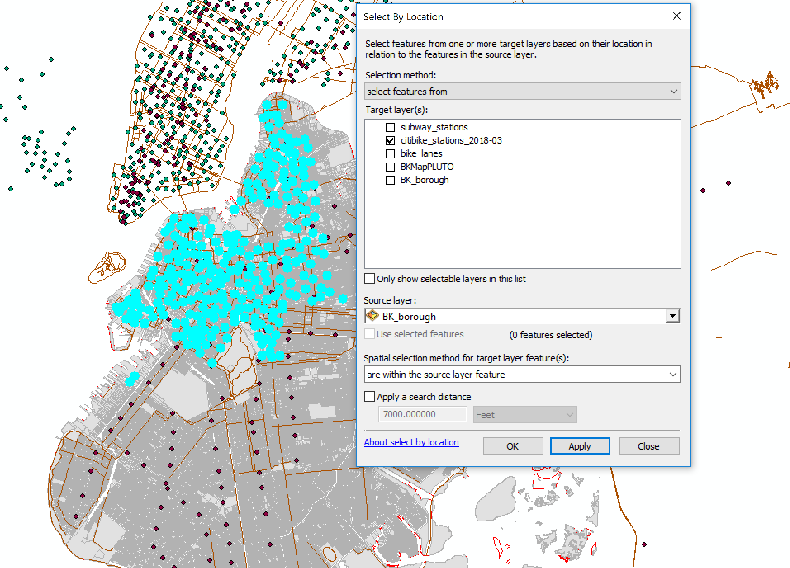
Repeat the same step for subway stations and bike lanes as target layers. Now you should have Citibike Stations, MTA Subway Stations and Bike Lanes/Routes clipped to the borough boundary of Brooklyn. When complete, remove the original feature classes.
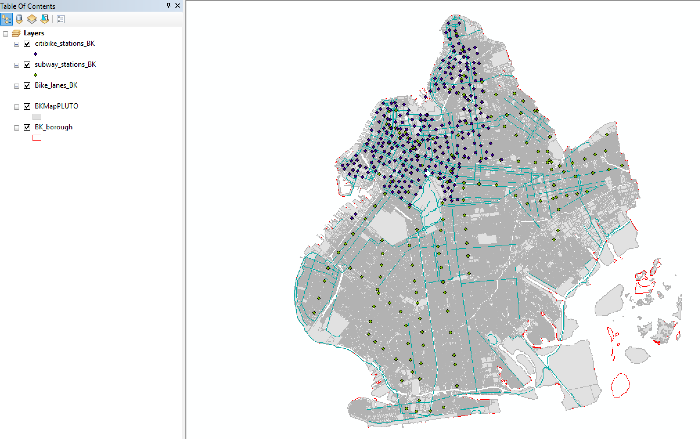
Before we create our input layers, we need to make sure they will be perfectly aligned. We can do that by defining a geoprocessing extent for all operations.
To define the geoprocessing extent, navigate to the Geoprocessing on the top of your toolbar, and select Environments. In the Environments Workspace, expand the Processing Extent toolbar and set your Extent to Same as layer BK_borough
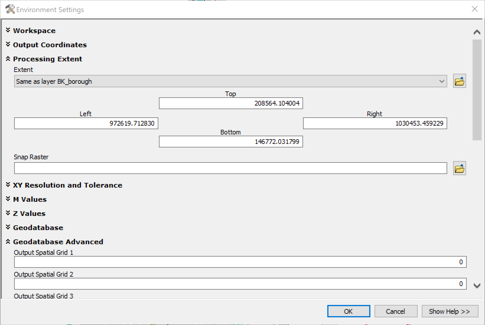
Criterion I: Citibike Stations
Average Nearest Neighbor | Buffer | Euclidean Distance
As Citibike is rolled out across neighborhoods and boroughs, a primary requirement for new station placement is nearness to pre-existing stations and network density. When expanding the network, Citibike rolls out collections of stations across an area at once. For this exercise, we will be avoiding densifying pre-existing networks of stations, while at the same time prioritizing distance to the existing network. The way we will accomplish this is by calculating the average nearest neighbor for all stations in Brooklyn, and use that distance to create a buffer area around each station that will be excluded from consideration.
Navigate to Geoprocessing in your toolbar and select ArcToolbox. This will open a new tab within your workspace. In this tab, expand the Spatial Statistics Tools item, and expand its child Analyzing Patterns. We will use the Average Nearest Neighbor tool.
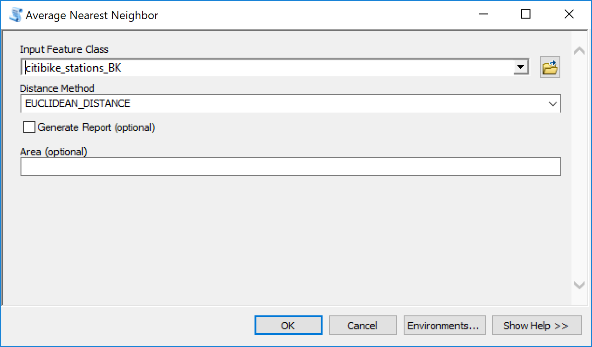
To calculate a nearest neighbor index, use the settings below
Set
Input Feature classto citibike_stations_BKSet
Distance methodto EUCLIDEAN_DISTANCEDo not generate report
Navigate to
Geoprocessingin your toolbar and selectResults. Take a moment to observe the results, looking specifically at the Nearest Neighbor Expected/Observed values. Both indexes cluster around 800 feet, so we will use this value as our buffer.
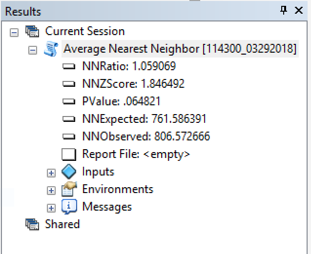
Now that the nearest neighbor index has been calculated, we will create a buffer based upon the results (Nearest Neighbor Expected and Nearest Neighbor Observed values). Navigate to Geoprocessing in your toolbar and select Buffer. This tool will create buffer polygons around input features to a specified distance (800 feet). To generate the buffer, use the settings below:
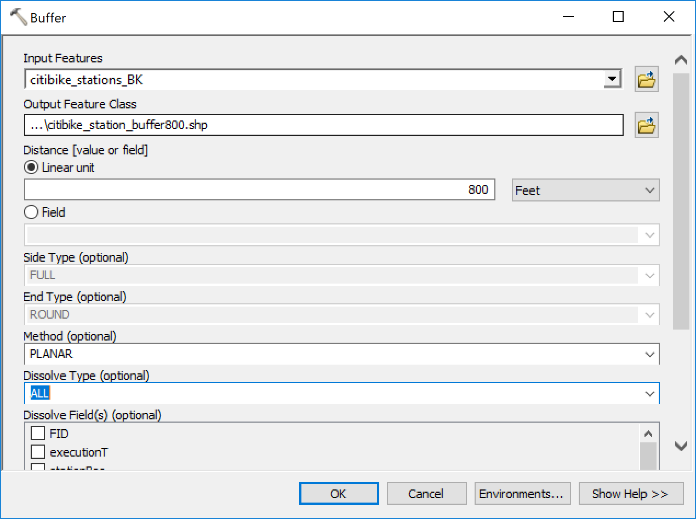
Set
Input Featuresto citibike_stations_BKSet
Output Feature Classto .....shpSet
Distanceto 800 Feet andDissolve Typeto ALL
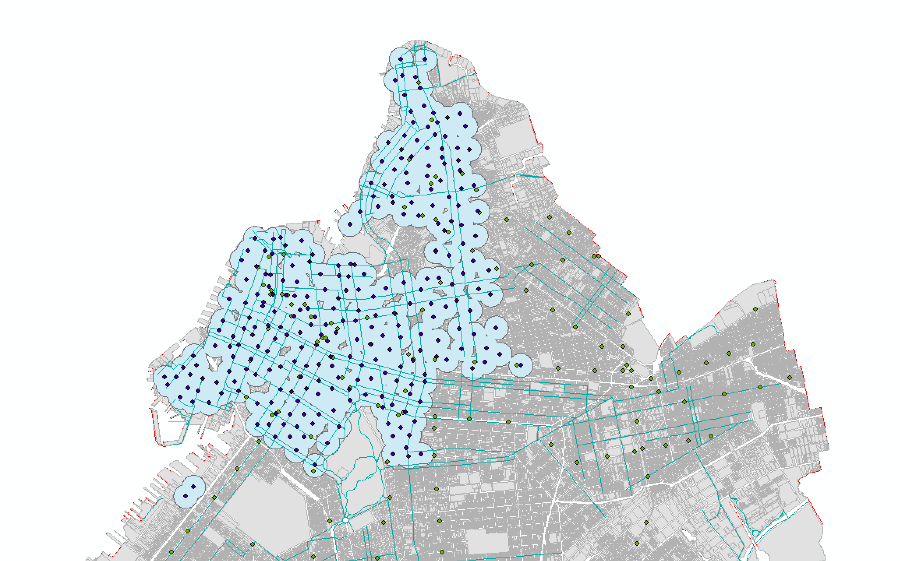
To finalize preparing the Citibike Station input layer, we need to generate a distance raster, utilizing the Euclidean Distance. Navigate to Geoprocessing in your toolbar and select ArcToolbox. This will open a new tab within your workspace. In this tab, expand the Spatial Analyst Tools item, and expand its child Distance. We will use the Euclidean Distance tool.
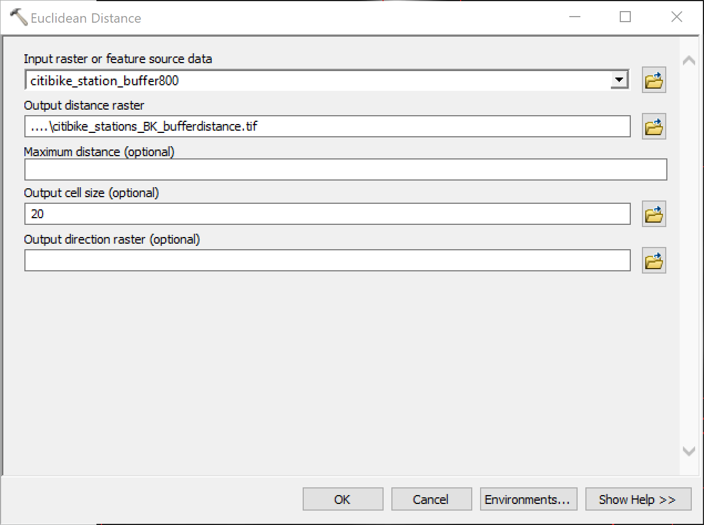
Set
Input Feature Source Datato citibike_buffer800ft (the buffer file you just created).Set
Output Distance Rasterto citibike_distance.tif. Be sure to write out the .tif extension to define the file type properly.Set
Output Cell Sizeto 20 ft and selectOK.
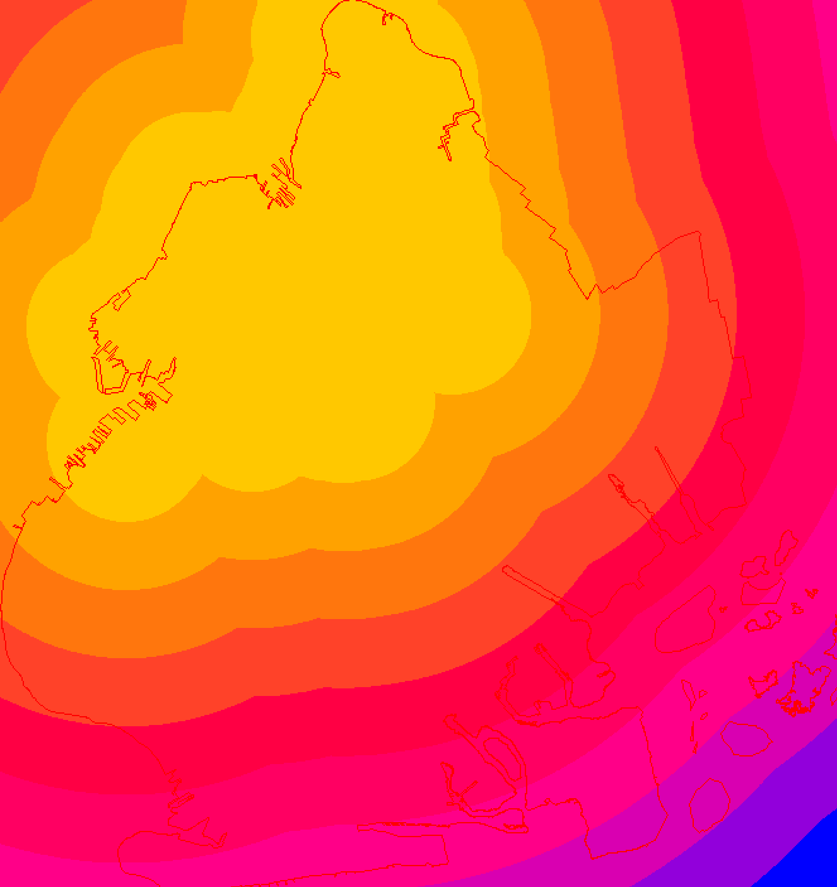
We are now ready to work with the Citibike criterion to generate a decision layer for analysis.
Criterion II: Recent Residential Analysis
Select by Attribute | Kernal Density
In addition to considering the existing Citibike network, we will also incorporate recent residential development in our decision analysis. To do so, we will rely on PLUTO data to select residential construction completed within the last 5 years (build date > 2013). To get started, we need to select buildings that fit these characteristics.
Navigate to Selection in your toolbar and select Select by Attributes. This will open tabular view of your data.
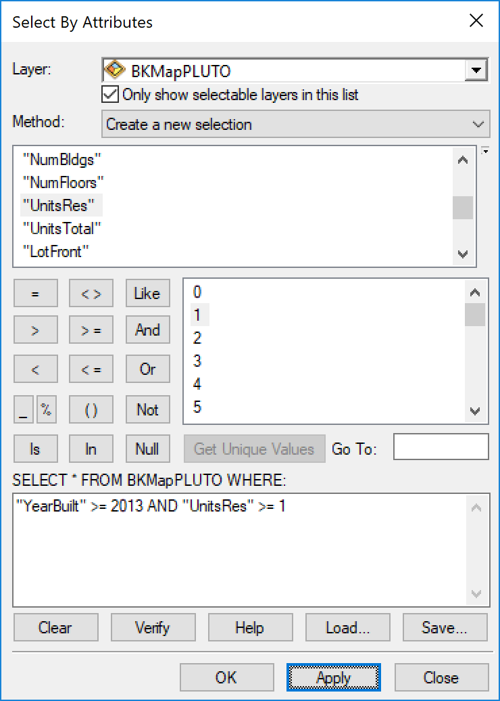
Set input
Layerto BKMapPLUTO.In the equation field of the workspace, we need to highlight buildings that have 1 or more residential units, as well as build dates that equal 2013 or greater. To do so, enter
”YearBuilt" >= 2013 AND "UnitsRes" >= 1and selectOK.Once you see a highlighted selection of data on your map, right-click on the BKMapPLUTO layer and select
Data>Export Data.With Selected Features set as your
Exportoption, navigate to an output folder that you would like to house the exported shapefile and selectOK.Once this updated PLUTO shapefile has been added to your layers panel, you can remove the original Brooklyn MapPLUTO layer.
With an updated PLUTO layer highlighting only buildings that have 1 or more residential units that also were built on or after 2013, we will perform kernel density calculations. This process will produce the ratio of the number of observations to an area using a density function. In this case we will be dividing the number of residential units built in the last 5 years in Brooklyn by an area defined as that encompassed by a radius from the center of each raster cell in the output raster dataset. To begin, navigate to Geoprocessing in your toolbar and select ArcToolbox. This will open a new tab within your workspace. In this tab, expand the Spatial Analyst Tools item, and expand its child Density. We will use the Kernel Density tool.
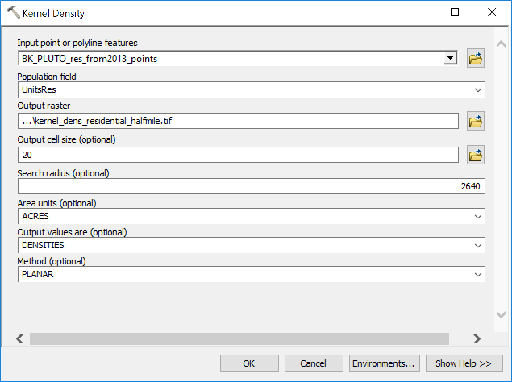
In the
Input Pointfield, select BK_PLUTO_res_from2013_points (the shapefile generated in the previous step).Set the
Populationinput field to UnitsRes.Set the
Search Radiusto 2,640 feet (half-mile).Set the
Area Unitsto Acres.Save the
Output Rasterto Save as “kernel_dens_residential_halfmile.tif” and selectOK.
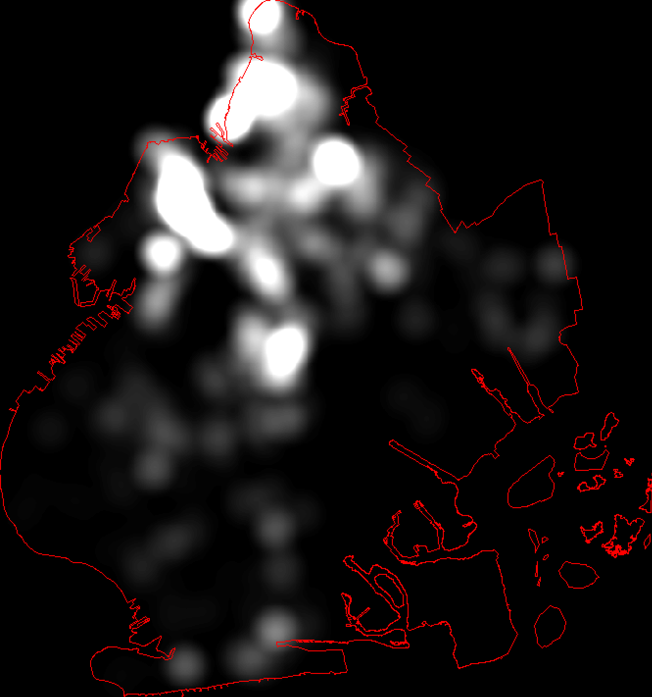
We are now ready to work with the Residential criterion to generate a decision layer for analysis.
Criterion III: Subway Stations
Euclidean Distance
To preparing the Subway Station locations for analysis, we need to generate a distance raster, utilizing the Euclidean Distance. Navigate to Geoprocessing in your toolbar and select ArcToolbox. This will open a new tab within your workspace. In this tab, expand the Spatial Analyst Tools item, and expand its child Distance. We will use the Euclidean Distance tool.
Set
Input Feature Source Datato MTA_SubwayStations_BK (the layer you generated of Subway Stations found within the Brooklyn Borough boundary).Set
Output Distance Rasterto subway_distance.tif. Be sure to write out the .tif extension to define the file type properly.Set
Output Cell Sizeto 20 ft and selectOK.
We are now ready to work with the Subway Station criterion to generate a decision layer for analysis.
Criterion IV: Bike Lanes/Routes
Euclidean Distance
To preparing the Bike Lanes/Routes locations for analysis, we need to generate a distance raster, utilizing the Euclidean Distance. Navigate to Geoprocessing in your toolbar and select ArcToolbox. This will open a new tab within your workspace. In this tab, expand the Spatial Analyst Tools item, and expand its child Distance. We will use the Euclidean Distance tool.
Set
Input Feature Source Datato DOT_BikeLanes_BK (the layer you generated of bike lanes/routes found within the Brooklyn Borough boundary).Set
Output Distance Rasterto bikelanes_distance.tif. Be sure to write out the .tif extension to define the file type properly.Set
Output Cell Sizeto 20 ft and selectOK.
We are now ready to work with the Bike Lanes/Routes criterion to generate a decision layer for analysis.
Create Decision Layers
Now that distance rasters have been generated, the output no longer fits neatly into the Brooklyn Borough boudnary. Therefore, we will run Extract by Mask to extracts cells from a raster within a mask defined by an input polygon shapefile feature class (Brooklyn boundary layer).
Navigate to Geoprocessing in your toolbar and select ArcToolbox. This will open a new tab within your workspace. In this tab, expand the Spatial Analyst Tools item, and expand its child Extraction. We will use the tool Extract by Mask.
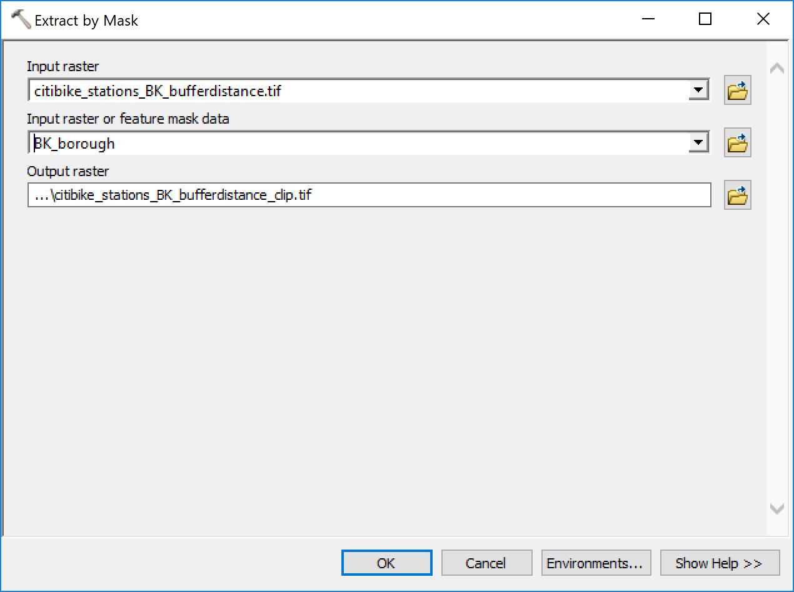
Set
Input Rasterto citibike_distance.tif.Set
Feature Maskto BK_Borough.Set
Output Distance Rasterto citibike_stations_BK_distance_clip.tif. Be sure to write out the .tif extension to define the file type properly. Once everything is setup, selectOK.
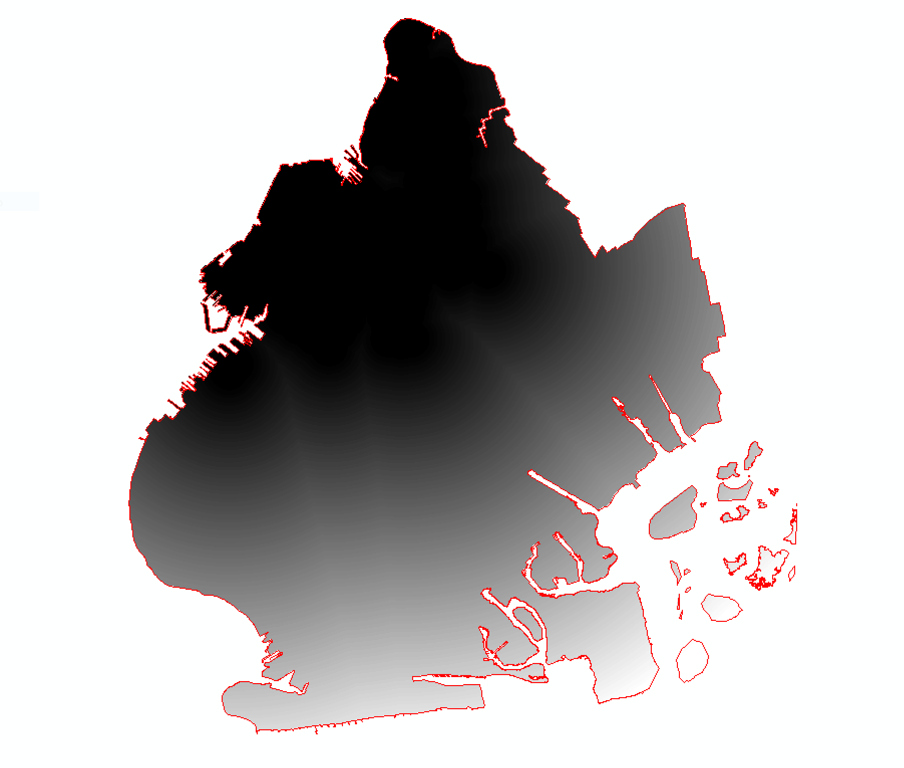
Repeat this step for each of the decision layers (subway stations, new residential units, and bike lanes/routes), and remove the non-clipped layers from your Table of Contents.
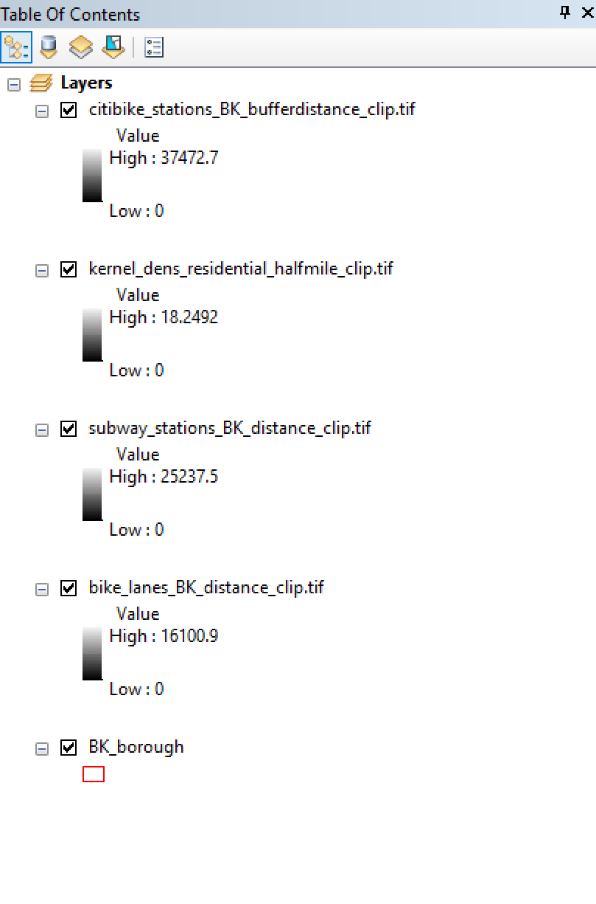
Reclassification
The reclassification function reclassifies or changes cell values in a raster to alternative values, based on user input. We will use Reclassify tool on all four input rasters in order to create a common scale of values between them. More specifically, we will reclassify input rasters by value ranges into five new classes, assigning “5” to the most suitable areas, and “1” to the least suitable area for citibike expansion in each input raster.
Navigate to Geoprocessing in your toolbar and select ArcToolbox. This will open a new tab within your workspace. In this tab, expand the Spatial Analyst Tools item, and expand its child Reclass. We will use the tool Reclassify.
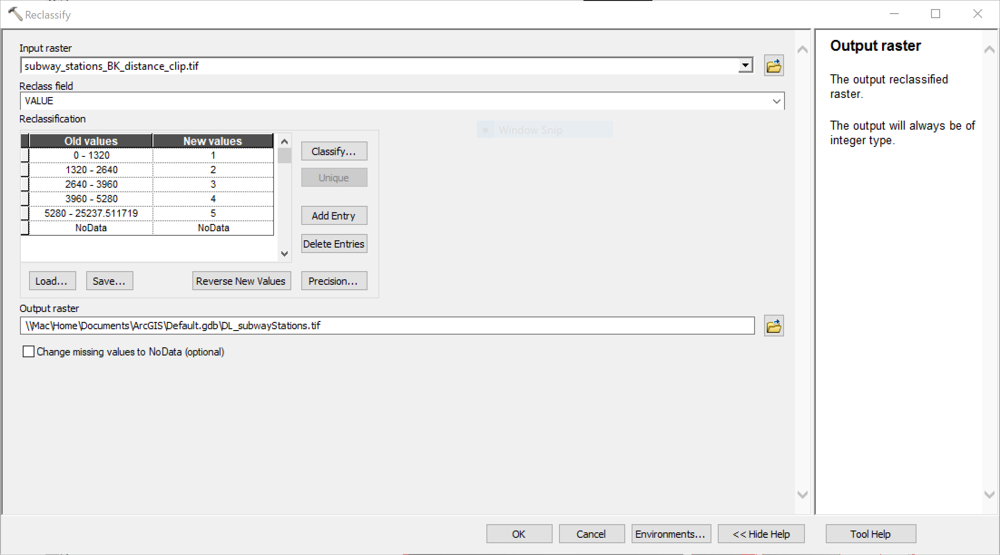
Set
Input Rasterto subway_stations_BK_distance_clip.tifClick on
Classify, and set theClassification Methodto ManualFor the classes, we will split the values of citibike stations, subway stations, and bike lanes/routes by quarter-mile increments. For recent residential units, we will use the
Classification MethodQuintiles. Quarter-mile increment entries are shown below.1320
2640
3960
5280
Leave as is (automatically generated from the MAX value)
Set the
Outputas DL_subwayStations.tifSelect OK
Repeat this reclassification for each of your remaining inputs (Citibike Stations, Bike Lanes/Routes, and Recent Residential Activity). As stated above, we will use the Manual Classification Method for Citibike Stations, Bike Lanes/Routes and Subway Stations (done in first example) based upon quarter-mile increments. For recent residential units, use the Classification Method Quintiles which will automatically generate. The reason we use the Quintiles is because we don't have any external factors that could influence our classification, so we will classify internally. For example, with subway stations, we would want to classify based upon how quickly one could walk to the subway (quarter-mile increments).
Bike Lanes/Routes
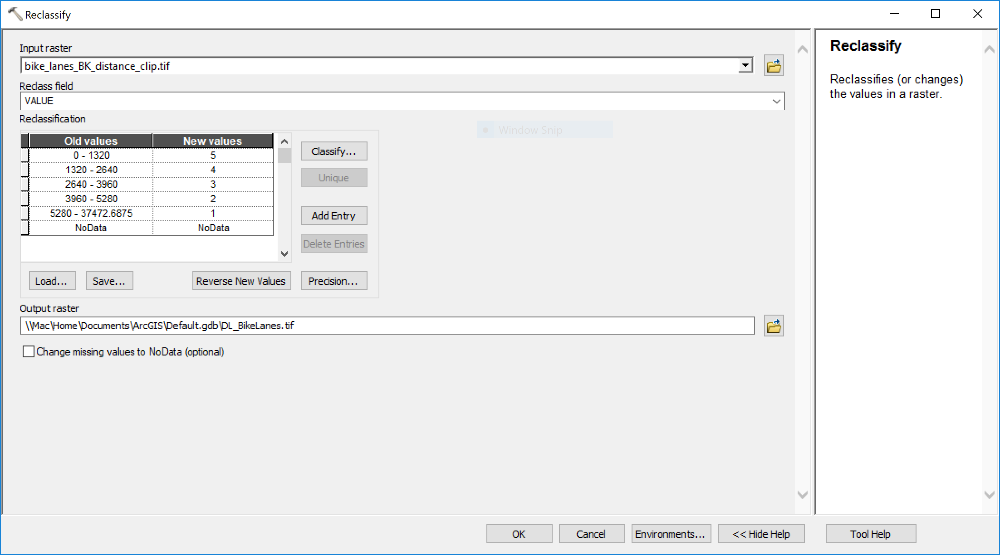Citibike Stations

Subway Stations
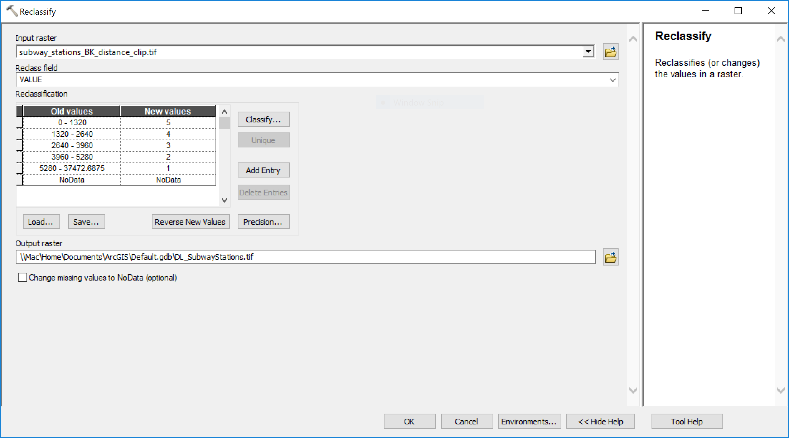Residential Development
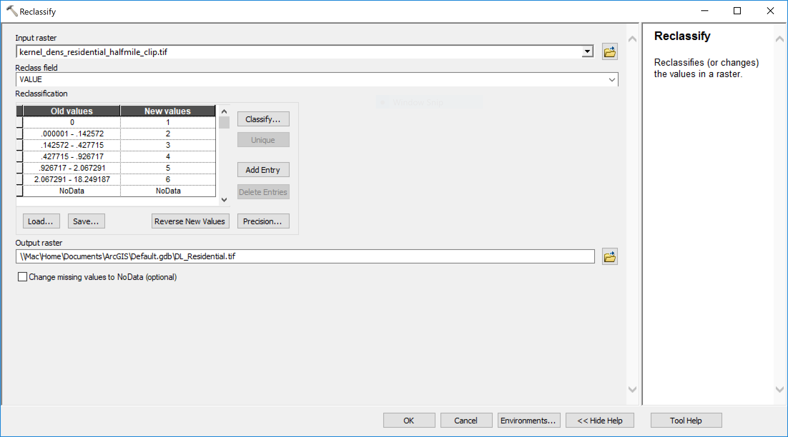Above are examples of each of the input tools. Now we are ready to add our values to produce a decision map.
Decision Mapping for Analysis
In the final step of this exercise, we will combine our decision layers to represent a final decision map that will highlight where opportune areas for Citibike expansion. This is the simplest step of the entire process, as we are simply using our raster calculator to add our decision layers. There are a variety of ways we can do this addition, weighting certain inputs above others. For this example, we are simply going to weight each input equally. To begin, navigate to Geoprocessing in your toolbar and select ArcToolbox. This will open a new tab within your workspace. In this tab, expand the Spatial Analyst Tools item, and expand its child Map Algebra. We will use the tool Raster Calculator.
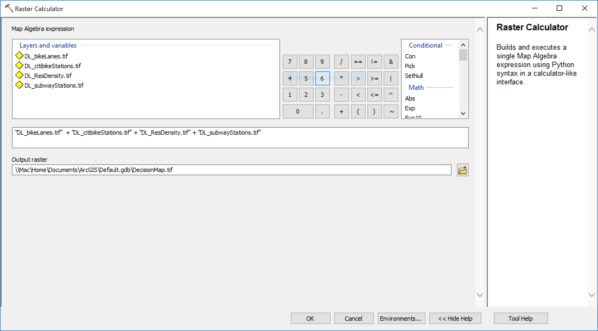
In the raster calculator, enter
"DL_bikeLanes.tif" + "DL_citibikeStations.tif" + "DL_ResDensity.tif" + "DL_subwayStations.tif".For
OuputDecisionMap.tif and selectOK.
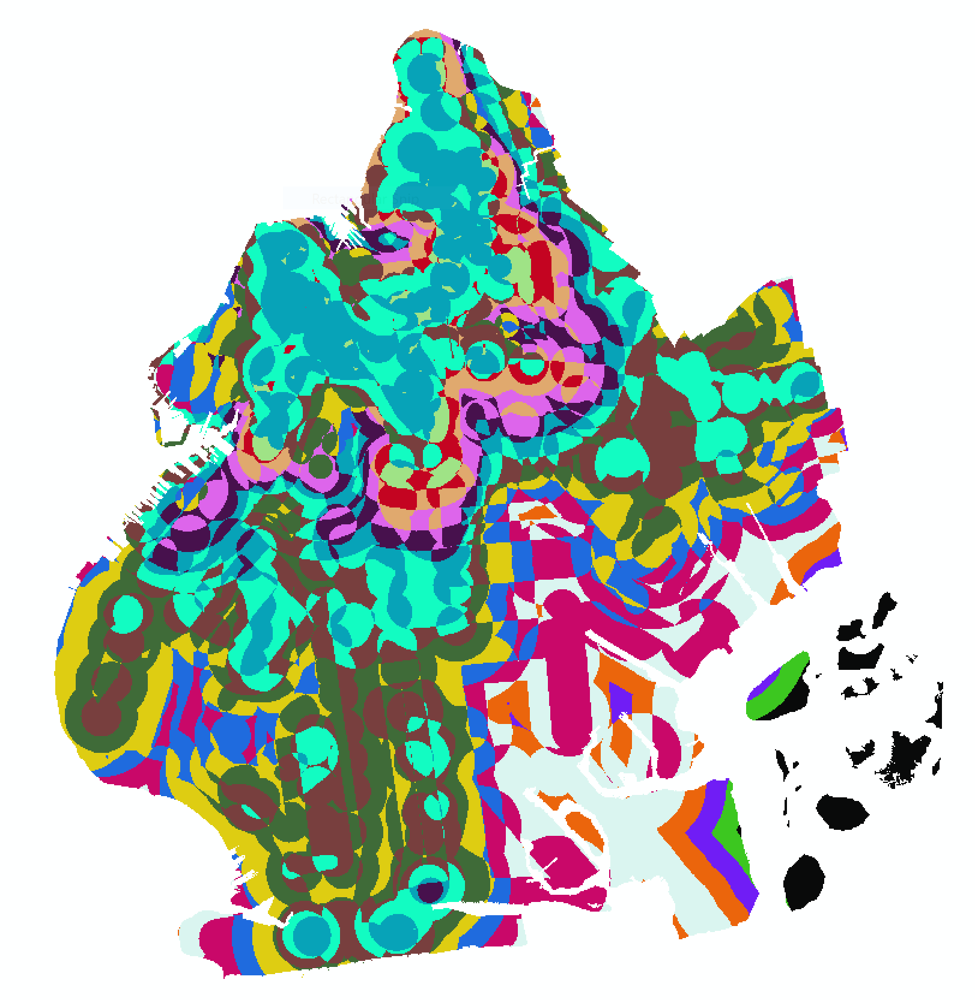
The initial output of our Raster Calculator will be unreadable but with some simple styling, we can create our first decision map. Right click on the newly generated layer DecisionMap.tif and click on Symbology. In this setting, we will select a new color ramp highlighting the spots for development in dark purple.
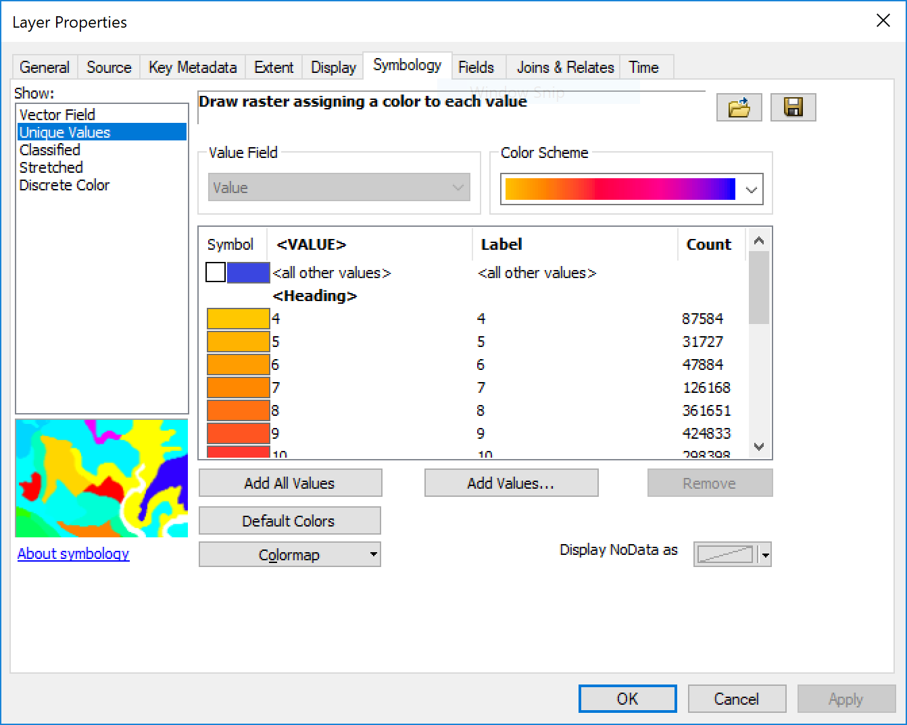
With some simple neighborhood outlines, we now have our first legible decision map that tells us which neighborhoods are best suited for the expansion of the Citibike network. From this analysis, we can identify that Prospect Park - Lefferts Garden, Crown Heights (North), and Bushwick (South) are the leading candidates. Remember that there are various inputs that could be taken into consideration were we to perform this analysis for Citibike. In addition, we've calculated this map based upon equal weighting of the selected inputs. One could imagine that prioritizing distance to Subway Stations ("DL_bikeLanes.tif" + "DL_citibikeStations.tif" + "DL_ResDensity.tif" + ("DL_subwayStations.tif"*2)), for example, might lead to a better designation for expansion.